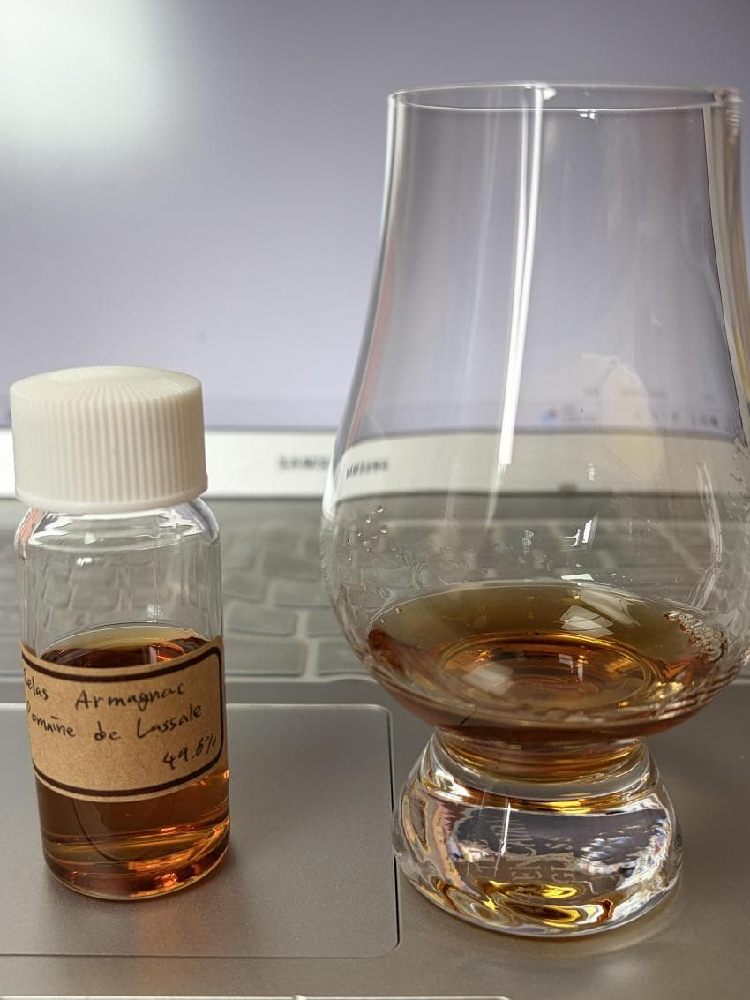

Gelas Armagnac Domaine de la Salle
주종 - Armagnac
도수 - 49.6%
숙성년수 - ?
캐스크 - French Limousin Oak
N - 꿀, 붉은 포도, 에스테르, 카라멜라이즈 시럽, 매실, 자두, 감초, 우디, 아니스, 민트, 건포도, 흙내음
잔에 따르면서 느끼는 인상은 미드에서 느껴질법한 진한 꿀향이 인상적이다
이후 노징을 하자 날카롭게 쏘아대는 에스테르가 있으나 강도가 강하지 않다
또 매실청과 같은 특유의 산미있는 달콤함이 느껴지면서 잘익은 자두의 달콤함
신선한 포도알갱이와 조금은 수분이 날아간 포도의 뉘앙스에 카라멜라이즈 시럽을 흩뿌린것 같은 달콤함이 느껴진다
그 뒤로는 좀 더 무겁고 어두운 뉘앙스를 지닌 향이 피어나는데
감초의 달큰함과 아니스, 정향과 같은 향신료와 허브가 무게를 덜어내면서도
기존 꼬냑들 보다 강하게 느껴지는 우디함이 몰트친화적인 인상을 준다
또 베티버같은 흙내음이 풍긴다
시간이 지나며 한줌의 건포도에 꿀을 끼얹은 풍미가 강하다
알콜이 날카롭게 조금씩 코를 친다
P - 워터리, 포도, 자두, 포도줄기, 에스테리, 우디, 카라멜, 감초, 시나몬, 정향, 흙내음 황설탕
가볍고 워터리한 질감이나 기존 꼬냑에 비해 무거운 느낌이다
달콤한 잘익은 청포도알갱이 포도줄기를 비롯한 에스테리함이 느껴지나 강하지 않다
오히려 우디, 감초, 카라멜의 풍미가 꽤 강하며 정향, 시나몬과 같은 향신료역시 두드러진다
베티버를 연상시키는 흙내음이 동반된
조금은 과한 우디함에 떫은 맛도 느껴지면서 붉은 포도와 자두의 달콤함과 황설탕 등 후반부에는 조금은 어두운 달콤함으로 전환된다
시나몬의 따스함이 코끝을 채우며 마무리한다
F - 황설탕, 포도껍질, 붉은 포도, 우디, 에스테르
포도껍질, 붉은 포도알갱이 한알을 먹은 듯한 풍미가 스치고
황설탕의 단맛과 떫은 우디함이 남는다 마무리는 은은한 에스테리함이 입에 맴돈다
총점 - 88.0
한줄평 - 몰트친화적 아르마냑이지만 조금은 지나친 나무영향력
리뷰 활성화 합시다 넵
댓글 1개